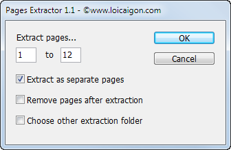
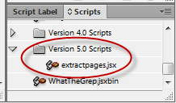

Extract pages
Script for InDesign CS6, version 1.1.

This is a reworked version of the script written by Eddy and Loic Aigon I took from here. The original version — 1.0 — doesn´t work in InDesign CS6. I didn't have time to find out the reason why so I simply removed the “localization” feature (the original script displays text in French or Russian in the respective localized versions of InDesign) which caused the problem.
Anyway, if you want to use the original version, create Version 5.0 Scripts folder (in Scripts Panel folder) and put the original script there like so:

Click here to download it.